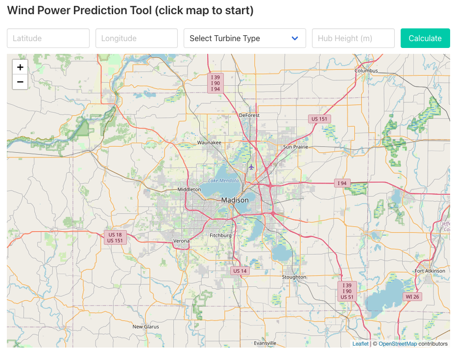
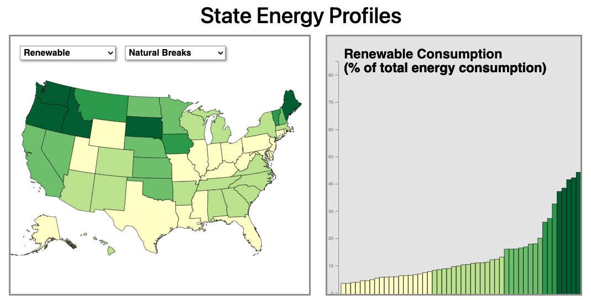

Capstone - Wind Power Projection Tool
Date created - August 2021
For my final project in this Master’s Degree program, I took on a massive challenge. Projecting wind power production for a user input turbine location. To accomplish this task, I leveraged the python library “windpowerlib” to help with the analysis. Because all of the analysis was completed in python, I needed to learn the Flask web framework to develop this project. As a result, this site is not hosted on GitHub Pages, but the source code and dependencies can be downloaded and run locally!
Zion National Park - Fire Research
Date created - August 2021
As I moved toward the end of my program at the University of Wisconsin, I wanted to explore using the ESRI JavaScript API for mobile and web application development. This application was designed to serve as an overview to Zion National Park though I added some extra features to assist with Researchers exploring the impacts of forest fires. Key elements in this map are locating a user via their devices GPS location, an embedded SQL query, and the ability to add and update research points.
Fracking in the United States
Date created - December 2020
To finish off my first true web development course, I worked with a team to create this application designed to explore the data behind fracking. This project forused heavily on the applications og GeoJSON data formats in a leaflet mapper to create a cohesive, data driven product.
State Energy Profiles - Sycronized D3 Displays
Date created - November 2020
As I moved on to testing out new JavaScript mapping packages, I developed an interactive State Energy Profile viewer using D3. This application shows coordinated data across multiple frames as it shows the types of energy produced by each state as a percentage of that state's total energy production. You can also toggle on and off different visualization methods to dive deeper into the data.
COVID-19 Impact on Airlines - Leaflet Demo
Date created - October 2020
For my first journey into true JavaScript development, I created a leaflet application that analyzed the impact that COVID-19 has had on the airline industry. To show this, I used proportional symbols to show the year over year change in the percentage of airline passengers at the 30 largest airport in the United States.
WWII Spy Thriller Mapbox Style
Date created - April 2020
In this assignment, I was tasked with creating a Mapbox style that could be used to promote a movie of my choice. I deciced to model my style as a promotion for a WWII spy thriller. In order to achieve this, I evaluated and reviewed dozens of authentic maps from both the Axis and Allied powers dating from 1941-1944. I then tried to recreate those designs and styles as best I could. By analyzing details such as the types of fonts and colors used, distiinctive markings for features, and even textures of the old maps, I attempted to put a modern "splippy map" spin on to this interesting time in histroy.
Big Ten Biking Tour
Date created - March 2020
My second large project at the University of Wisconsin was a challenge to design both a geographic route as well as a high level peice of cartography. The primary focus of this exercise was to highlight the natrual landscape and elevation in basemap without overshadowing the visual hierarchy of the planned biking route.

Northern Spotted Owl Infographic
Date created - February 2020
As part of my first visual design course at the University of Wisconsin, I created this infographic about the struggles of the Northern Spotted Owl and its habitat loss. The primary goal of this project was to become accustomed to the Adobe Suite of software as well as display bivariate data in an understandable way.